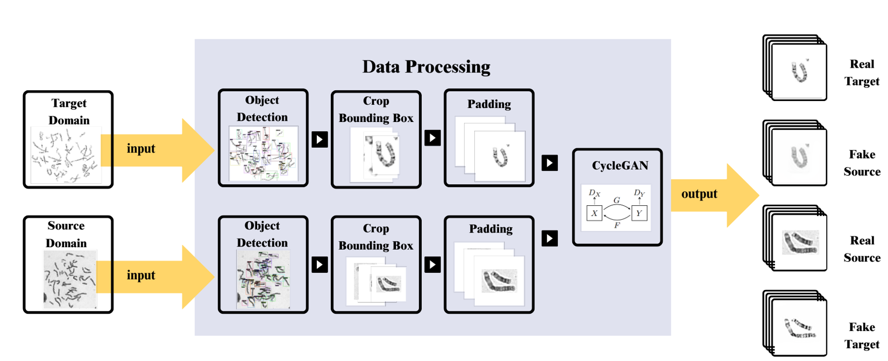
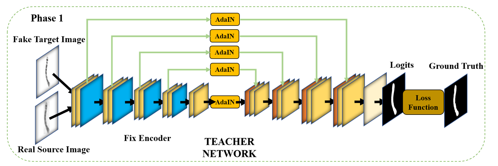
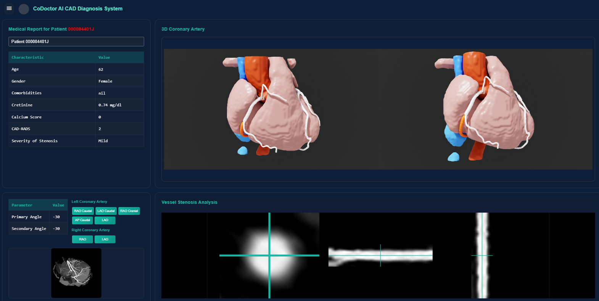
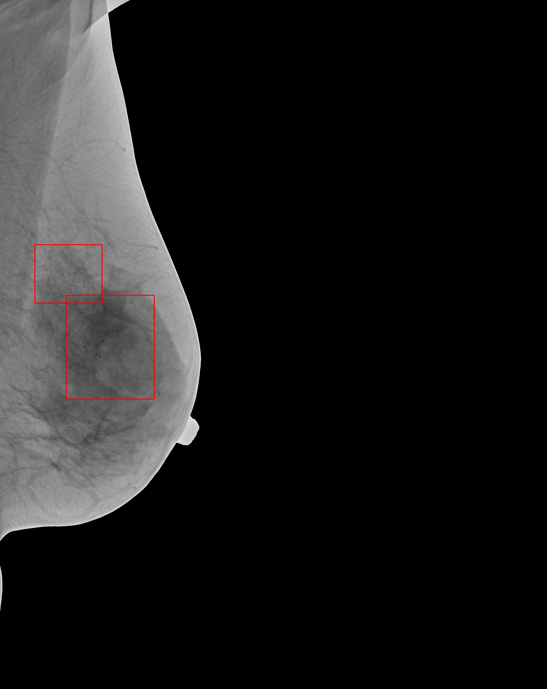
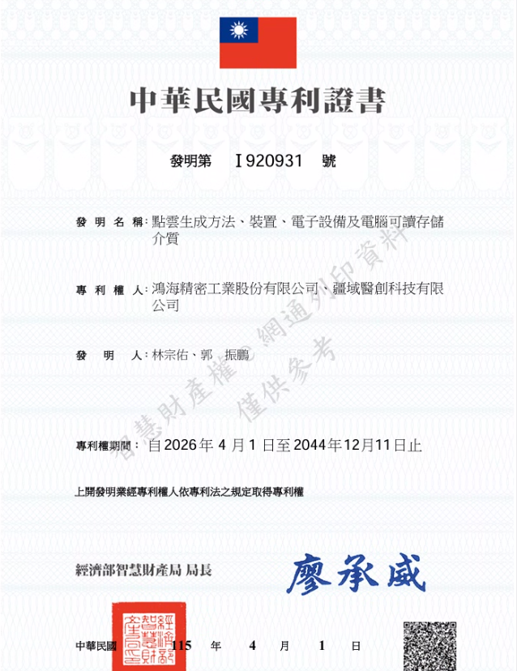
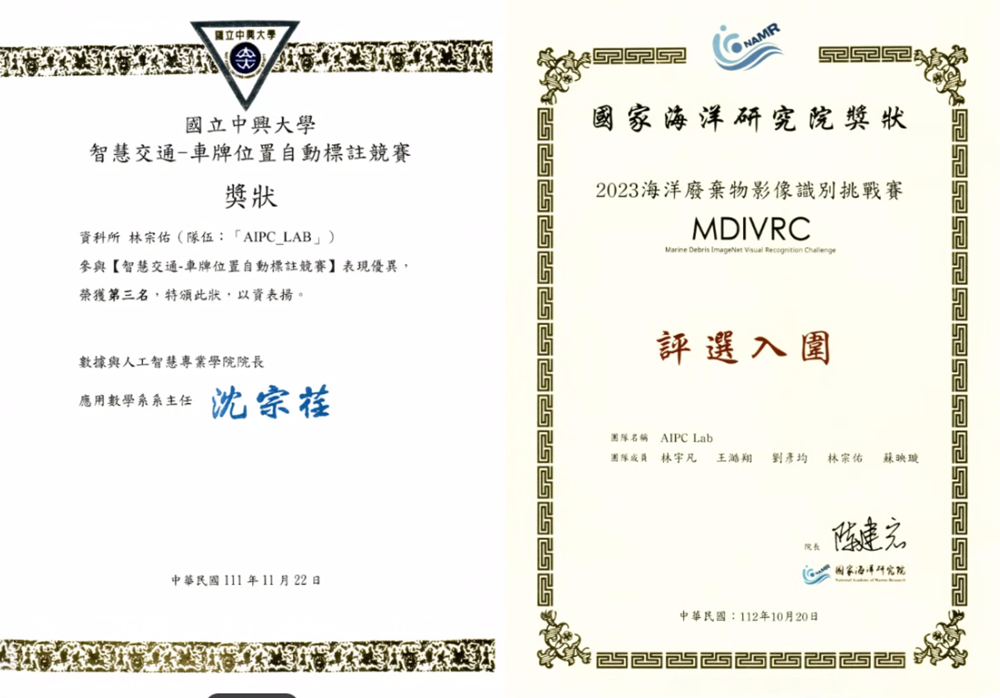

應徵職稱：自動化設備機器視覺工程師
專長：深度學習、影像處理
0977-661-082 | asd3718295@gmail.com
鴻海精密工業 | 研發工程師 (2024/8 - 至今)
鴻海精密工業 | AI建模實習生 (2023/7 - 2024/5)
技術應用：Cycle-GAN + U-Net + 師生模型 (Teacher-Student) + AdaIN
消弭榮總與長庚影像間的外觀差異，假圖分類器驗證準確率達 96.6%。
以熵圖調整偽標籤可信度，無需目標域標籤也可優化分割效能。
對齊各層編碼器特徵的均值與標準差，將源域分佈對齊至目標域。


風格轉換流程與領域適應架構
技術應用：nn-UNet 、CPR 重組、血管管徑量化
血管節點建立Graph後自動分組血管，透過CPR 將血管拉直重組，輔助醫師診斷。
CPR 結合 邊緣偵測演算法，精準還原血管管徑，輔助狹窄定位。

血管造影與 3D 結構重建結果
技術應用：ViT (DINOv3) + Faster R-CNN
Gamma 校正 及 CLAHE 凸顯鈣化亮點。
ViT + DeConv 建構多尺度感知。
不同難度病灶設定不同閾值，兼顧靈敏度與特異度。

病灶偵測結果
已核准
申請中

發明第 I920931 號 · 公告日 2024/12/11

期待能與您分享更多技術細節
Q & A